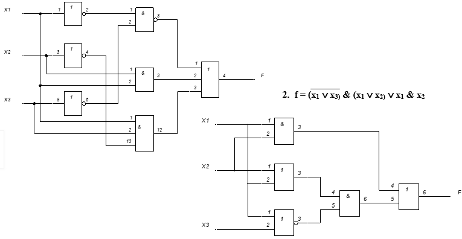
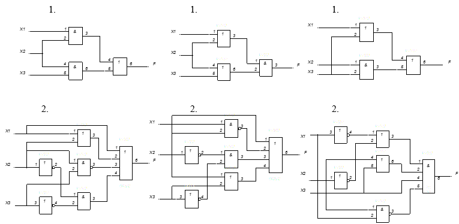

Практическая работа №1
Тема: построение логической схемы по логической формуле и обратно.
Дидактическая цель: закрепить теоретические знания по основам математической логики и выработать практические навыки построения логической схемы по логической формуле и наоборот.
Литература:
1. Ф.А. Новиков. Дискретная математика. – С-Пб.: Питер. 2008. 3.1., 4.1.
2. Еловенко Н.А. Дискретная математика. Учебное пособие. – Волгоград. ГОУ СПО ВЭТК. 2008. Главы 2,3.
Ход занятия:
1. Проверка теоретической подготовки студентов (три булевы операции: обозначение в формуле и на схеме, таблицы истинности, три вида представления логической функции).
2. Инструктаж преподавателя о ходе выполнения работы.
3. Выполнение работы с использованием методических указаний по вариантам.
4. Подведение итогов и оценка работы каждого студента.
Порядок выполнения работы:
1. Ознакомиться с примером решения.
2. Решить задания, соблюдая порядок оформления примера и оформить отчет (номер, тема и цель практической работы, решение задания по варианту, вывод).
3. Подготовить ответы на контрольные вопросы (устно), сделать вывод и предъявить отчет преподавателю.
Примеры решения:
1. f = x1 & x3 x1 & x2 & x3 x1 & x2

Задание 1: построить схему по логической формуле
1 вариант 2 вариант 3 вариант
f = x1 & x3 x1 & x2 & x3 x3
f = x1 & x3 x1 & x2 x1
f = x1 & x3 x1 & x2 & x3 x3
f = x1 & x3 x2 & x3 x3
f = x1 & x3 x1 & x2 & x3 x3
f = x1 & x3 x1 & x3 x2
Задание 2: записать формулу по логической схеме
1 вариант 2 вариант 3 вариант

Контрольные вопросы:
1. Описать обозначение, граф. изображение и таблицу истинности конъюнкции.
2. Описать обозначение, граф. изображение и таблицу истинности дизъюнкции.
3. Описать обозначение, граф. изображение и таблицу истинности инверсии.
4. Что общего и чем отличаются таблицы истинности дизъюнкции и конъюнкции.
5. Что общего и чем отличается изображение на схеме дизъюнкции и конъюнкции.
6. Что общего и чем отличается изображение на схеме дизъюнкции и инверсии.
7. Описать три вида представления логической функции.